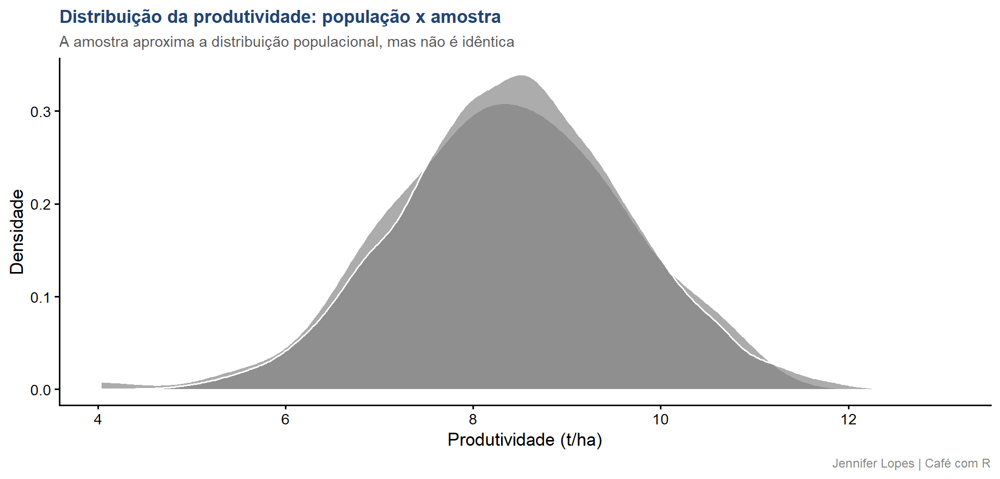
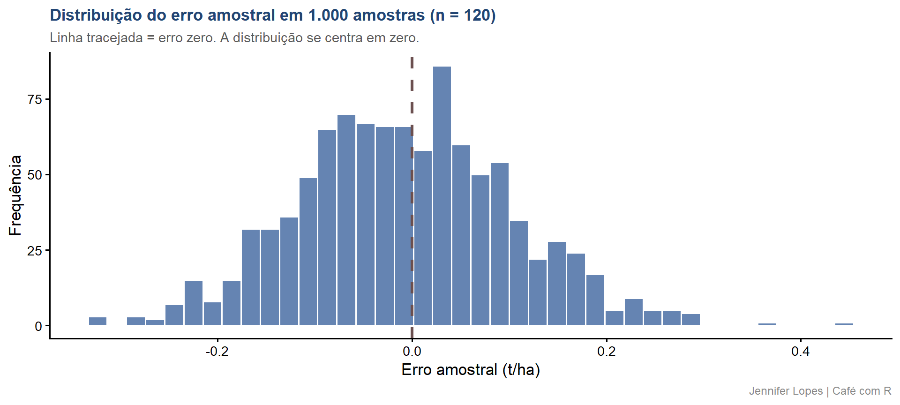
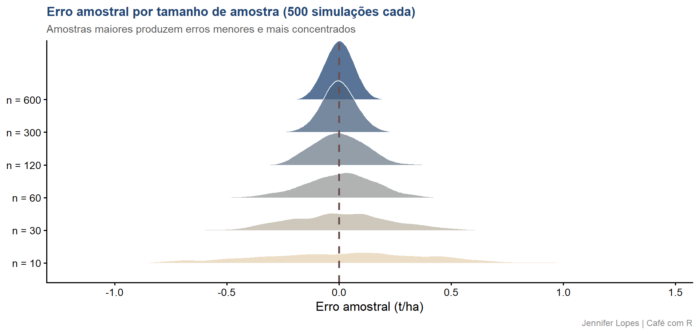
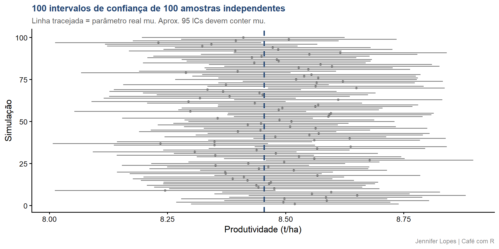
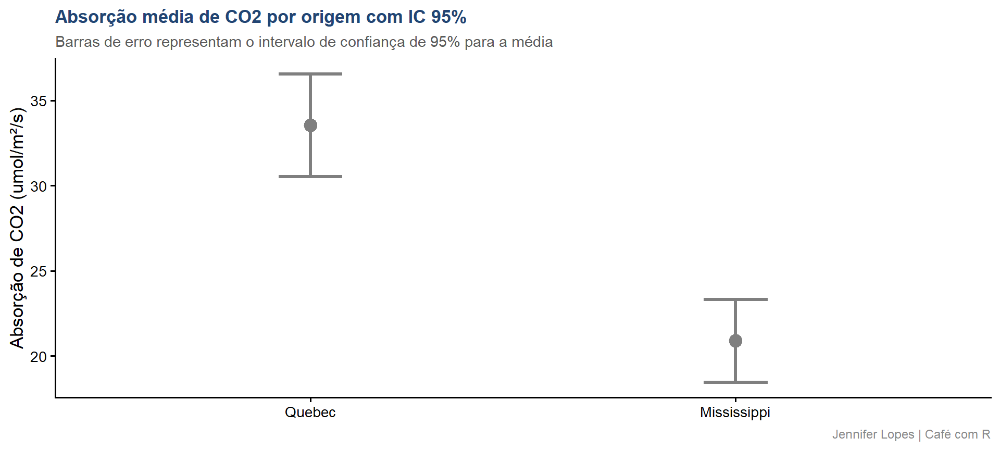

# Extrair uma amostra de 120 parcelas da população de 10.000
amostra <- populacao |>
slice_sample(n = 120)
# Comparar distribuições
bind_rows(
populacao |> mutate(origem = "População (N = 10.000)"),
amostra |> mutate(origem = "Amostra (n = 120)")) |>
ggplot(aes(x = produtividade, fill = origem)) +
geom_density(alpha = 0.65, color = "white") +
scale_fill_manual(values = c(
"População (N = 10.000)" = cores_cafe["azul_escuro"],
"Amostra (n = 120)" = cores_cafe["marrom"])) +
labs(
title = "Distribuição da produtividade: população x amostra",
subtitle = "A amostra aproxima a distribuição populacional, mas não é idêntica",
x = "Produtividade (t/ha)",
y = "Densidade",
fill = NULL,
caption = "Jennifer Lopes | Café com R") +
temaAula 26. População, Amostra e Inferência
Fundamentos para a correta generalização dos resultados experimentais
Democratização
Esta aula foi construída para que você compreenda por que resultados experimentais precisam da inferência estatística para ter validade científica. Os dados são simulados para representar um experimento agronômico com o híbrido H2.

Acompanhe o Café com R

Objetivos da aula
- Distinguir população e amostra com precisão matemática
- Compreender a diferença entre parâmetro, estimativa e estimador
- Dominar a convenção de notação estatística
- Entender o conceito de erro amostral e visualizá-lo com simulações
- Aplicar inferência estatística com
t.test()e intervalos de confiança - Interpretar resultados corretamente e identificar os erros mais comuns
Bloco 1
Conceitos Fundamentais
População: conceito
A população é o conjunto completo de todas as unidades - indivíduos, parcelas, observações - que compartilham uma ou mais características de interesse para o pesquisador.
Sua dimensão total é representada por \(N\) (maiúsculo).
No contexto agronômico:
A população do híbrido H2 é o conjunto hipotético de todas as parcelas onde esse híbrido poderia ser cultivado - em todos os solos, climas, anos e manejos possíveis.
Important
Atenção: a população é uma abstração matemática. Ela nunca é completamente observável. O pesquisador não mede a população - ele a define conceitualmente e coleta uma amostra dela.
Amostra: definição precisa
A amostra é um subconjunto da população, selecionado com o propósito de representá-la.
Seu tamanho é representado por \(n\) (minúsculo).
No contexto agronômico:
As 120 parcelas avaliadas em um experimento em um local específico, em um ano, com um manejo determinado, constituem a amostra.
Important
Atenção: a validade das conclusões depende criticamente de como a amostra foi obtida.
- Uma amostra não representativa, mesmo que grande, conduz a conclusões sistematicamente errôneas, independentemente da sofisticação da análise aplicada.
População x Amostra: visualização
Gráfico: população x amostra

A curva da amostra se aproxima da população, mas nunca é idêntica. Essa diferença tem nome: erro amostral.
A convenção de notação estatística
Esta convenção é universal e fundamental para ler qualquer artigo estatístico:
| Símbolo | Tipo | Representa | Natureza |
|---|---|---|---|
| \(\mu\) | Parâmetro | Média populacional | Desconhecida |
| \(\sigma\) | Parâmetro | Desvio padrão populacional | Desconhecida |
| \(\rho\) | Parâmetro | Correlação populacional | Desconhecida |
| \(\bar{x}\) | Estimativa | Média amostral | Calculada |
| \(s\) | Estimativa | Desvio padrão amostral | Calculada |
| \(r\) | Estimativa | Correlação amostral | Calculada |
Regra: letras gregas são parâmetros populacionais. Letras latinas e símbolos com acento circunflexo (\(\hat{}\)) são estimativas amostrais.
Parâmetro, estimativa e estimador
Três conceitos distintos que a maioria confunde:
Parâmetro (\(\mu\), \(\sigma\)): Quantidade numérica que descreve a população. Existe mas é desconhecida. Nunca calculamos o parâmetro - apenas o estimamos.
Estimativa (\(\bar{x}\), \(s\)): Valor calculado a partir dos dados da amostra para aproximar o parâmetro. É conhecida porque você a calculou. Muda a cada nova amostra.
Estimador: A função matemática que transforma os dados em estimativa. A média amostral \(\bar{x} = \frac{1}{n}\sum x_i\) é o estimador do parâmetro \(\mu\).
Tip
Analogia: \(\mu\) é a temperatura real do paciente. \(\bar{x}\) é a leitura do termômetro. O termômetro é o estimador. A leitura é a estimativa. A temperatura real nunca é diretamente observada.
Código: parâmetro e estimativa no R
# O parâmetro mu é conhecido aqui porque simulamos a população
# Na prática real, ele é sempre desconhecido
mu_real <- mean(populacao$produtividade)
sigma_real <- sd(populacao$produtividade)
# A estimativa xbarra é calculada a partir da amostra
xbarra <- mean(amostra$produtividade)
s <- sd(amostra$produtividade)
tibble(
Medida = c("Média", "Desvio padrão"),
Parâmetro = c(round(mu_real, 4), round(sigma_real, 4)),
Estimativa = c(round(xbarra, 4), round(s, 4)),
Diferença = c(
round(xbarra - mu_real, 4),
round(s - sigma_real, 4)))Output: parâmetro e estimativa
# A tibble: 2 × 4
Medida Parâmetro Estimativa Diferença
<chr> <dbl> <dbl> <dbl>
1 Média 8.45 8.36 -0.0932
2 Desvio padrão 1.20 1.24 0.0373A diferença entre estimativa e parâmetro é o erro amostral.
Ele existe em toda amostra.
O objetivo da inferência é quantificar esse erro, não eliminá-lo.
Bloco 2
Erro Amostral
O que é erro amostral
O erro amostral é a diferença entre a estimativa calculada na amostra e o parâmetro populacional verdadeiro:
\[\text{Erro amostral} = \bar{x} - \mu\]
Propriedades fundamentais:
- O erro amostral é inevitável: toda amostra produz uma estimativa diferente do parâmetro
- O erro amostral é aleatório: sua direção (positivo ou negativo) e magnitude variam entre amostras
- O erro amostral diminui com o aumento do tamanho amostral
- O erro amostral não é um erro do pesquisador: é uma consequência matemática da amostragem
Simulação: erro amostral com 1.000 amostras
# Extrair 1.000 amostras de tamanho 120 e calcular a média de cada uma
simulacao <- map_dfr(1:1000, function(i) {
amostra_i <- populacao |> slice_sample(n = 120)
tibble(
simulacao = i,
media_amostral = mean(amostra_i$produtividade),
erro_amostral = mean(amostra_i$produtividade) - mu_real)})
simulacao |>
ggplot(aes(x = erro_amostral)) +
geom_histogram(bins = 40, fill = cores_cafe["azul_claro"],
color = "white", alpha = 0.85) +
geom_vline(xintercept = 0, color = cores_cafe["marrom"],
linewidth = 1.2, linetype = "dashed") +
labs(
title = "Distribuição do erro amostral em 1.000 amostras (n = 120)",
subtitle = "Linha tracejada = erro zero. A distribuição se centra em zero.",
x = "Erro amostral (t/ha)",
y = "Frequência",
caption = "Jennifer Lopes | Café com R") +
temaGráfico: distribuição do erro amostral

O erro amostral se distribui simetricamente em torno de zero.
Isso é o Teorema Central do Limite em ação: a média amostral é um estimador não viesado de \(\mu\).
Simulação: efeito do tamanho amostral
# Comparar o erro amostral para diferentes tamanhos de amostra
tamanhos <- c(10, 30, 60, 120, 300, 600)
erros_por_tamanho <- map_dfr(tamanhos, function(n) {
map_dfr(1:500, function(i) {
amostra_i <- populacao |> slice_sample(n = n)
tibble(
n = n,
erro_amostral = mean(amostra_i$produtividade) - mu_real)})}) |>
mutate(n_label = paste0("n = ", n),
n_label = fct_reorder(n_label, n))
erros_por_tamanho |>
ggplot(aes(x = erro_amostral, y = n_label,
fill = n_label)) +
ggridges::geom_density_ridges(alpha = 0.75, color = "white") +
geom_vline(xintercept = 0, color = cores_cafe["marrom"],
linewidth = 1, linetype = "dashed") +
scale_fill_manual(values = colorRampPalette(
c(cores_cafe["bege"], cores_cafe["azul_escuro"]))(6)) +
labs(
title = "Erro amostral por tamanho de amostra (500 simulações cada)",
subtitle = "Amostras maiores produzem erros menores e mais concentrados",
x = "Erro amostral (t/ha)",
y = NULL,
caption = "Jennifer Lopes | Café com R") +
tema +
theme(legend.position = "none")Gráfico: efeito do tamanho amostral

Interpretação: efeito do tamanho amostral
O que a simulação demonstra:
- Com \(n = 10\), o erro amostral pode chegar a \(\pm 1\) t/ha - uma imprecisão inaceitável para decisões agronômicas
- Com \(n = 120\), o erro raramente ultrapassa \(\pm 0{,}3\) t/ha
- Com \(n = 600\), o erro se concentra próximo de zero com distribuição muito estreita
- A relação não é linear: dobrar o tamanho amostral não dobra a precisão. A precisão aumenta proporcionalmente à raiz quadrada de \(n\)
\[\text{Erro padrão da média} = \frac{\sigma}{\sqrt{n}}\]
Esse resultado é o fundamento matemático do planejamento amostral.
Bloco 3
Inferência Estatística
O que é inferência estatística
- A inferência estatística é o conjunto de procedimentos que permite generalizar conclusões da amostra para a população, sempre acompanhadas de uma quantificação rigorosa da incerteza envolvida.
Sem inferência:
- Os resultados de um experimento valem apenas para as parcelas observadas. Isso é scientificamente irrelevante - nenhuma decisão agrícola se baseia nessas parcelas específicas.
Com inferência:
É possível afirmar, com um nível controlado de confiança, que a produtividade média do híbrido H2 na população está em determinado intervalo.
A inferência se apoia em dois pilares complementares: estimação e teste de hipóteses.
Pilar 1: intervalo de confiança
O intervalo de confiança é uma faixa de valores calculada a partir da amostra que, com uma probabilidade especificada (nível de confiança), contém o parâmetro populacional.
Para a média populacional \(\mu\), o IC com nível de confiança \((1-\alpha)\) é:
\[IC_{(1-\alpha)} = \bar{x} \pm t_{(n-1, \alpha/2)} \cdot \frac{s}{\sqrt{n}}\]
Componentes:
- \(\bar{x}\): estimativa pontual da média
- \(t_{(n-1, \alpha/2)}\): valor crítico da distribuição \(t\) de Student com \(n-1\) graus de liberdade
- \(\frac{s}{\sqrt{n}}\): erro padrão da média - mede a precisão da estimativa
O que IC 95% significa
Tip
Interpretação correta: se repetíssemos o experimento muitas vezes e calculássemos um IC 95% em cada repetição, 95% desses intervalos conteriam o verdadeiro parâmetro \(\mu\).
Caution
Important
Interpretação incorreta (e muito comum): “há 95% de probabilidade de \(\mu\) estar neste intervalo específico”. O parâmetro \(\mu\) é fixo - ele está ou não está no intervalo. A probabilidade 95% se refere ao procedimento, não ao intervalo calculado.
Também incorreto: “95% dos dados estão dentro do intervalo”. O IC é sobre a média, não sobre a distribuição dos dados individuais.
Código: IC 95% com t.test()
# t.test() calcula o IC para a média de um vetor numérico
resultado_ic <- t.test(
amostra$produtividade,
conf.level = 0.95)
# Extrair os componentes do resultado em formato tidy
tibble(
estimativa = resultado_ic$estimate,
ic_inf = resultado_ic$conf.int[1],
ic_sup = resultado_ic$conf.int[2],
erro_padrao = resultado_ic$stderr,
n = nrow(amostra)) |>
mutate(across(where(is.numeric), ~ round(.x, 4)))Output: IC 95% para a produtividade
# A tibble: 1 × 5
estimativa ic_inf ic_sup erro_padrao n
<dbl> <dbl> <dbl> <dbl> <dbl>
1 8.36 8.14 8.59 0.113 120Interpretação: com base nesta amostra de 120 parcelas, estimamos que a produtividade média populacional do híbrido H2 está entre os valores de ic_inf e ic_sup t/ha, com 95% de confiança no procedimento de estimação.
Simulação: o que acontece com 100 ICs
# Calcular 100 ICs a partir de 100 amostras independentes
ics <- map_dfr(1:100, function(i) {
am <- populacao |> slice_sample(n = 120)
tc <- t.test(am$produtividade, conf.level = 0.95)
tibble(
simulacao = i,
media = tc$estimate,
ic_inf = tc$conf.int[1],
ic_sup = tc$conf.int[2],
contem_mu = tc$conf.int[1] <= mu_real &
tc$conf.int[2] >= mu_real)
})
ics |>
ggplot(aes(y = simulacao, color = contem_mu)) +
geom_segment(aes(x = ic_inf, xend = ic_sup,
yend = simulacao), linewidth = 0.6) +
geom_point(aes(x = media), size = 1.2) +
geom_vline(xintercept = mu_real,
color = cores_cafe["azul_escuro"],
linewidth = 1, linetype = "dashed") +
scale_color_manual(
values = c("TRUE" = cores_cafe["azul_claro"],
"FALSE" = cores_cafe["marrom"]),
labels = c("TRUE" = "Contém mu",
"FALSE" = "Não contém mu")) +
labs(
title = "100 intervalos de confiança de 100 amostras independentes",
subtitle = "Linha tracejada = parâmetro real mu. Aprox. 95 ICs devem conter mu.",
x = "Produtividade (t/ha)",
y = "Simulação",
color = NULL,
caption = "Jennifer Lopes | Café com R") +
temaGráfico: 100 intervalos de confiança

Interpretação: o gráfico dos 100 ICs
O que essa simulação demonstra:
- Aproximadamente 95 dos 100 intervalos (em azul) contêm o parâmetro real \(\mu\)
- Os intervalos em marrom são aqueles que, nessa amostra específica, não capturaram \(\mu\)
- Cada intervalo é diferente porque cada amostra é diferente
- Nenhum intervalo individual tem 95% de probabilidade de conter \(\mu\) - a probabilidade 95% descreve o procedimento ao longo de repetições
Esta é a demonstração visual mais direta do que IC 95% realmente significa.
Pilar 2: teste de hipóteses
O teste de hipóteses avalia se os dados observados são compatíveis com uma afirmação específica sobre a população.
Estrutura formal:
- \(H_0\) (hipótese nula): afirmação sobre o parâmetro que será testada. Geralmente expressa ausência de efeito ou igualdade entre grupos.
- \(H_1\) (hipótese alternativa): afirmação contrária à nula. O que o pesquisador quer evidenciar.
Exemplo agronômico:
\(H_0: \mu_{Quebec} = \mu_{Mississippi}\) - não há diferença na absorção de CO2 entre as origens
\(H_1: \mu_{Quebec} \neq \mu_{Mississippi}\) - há diferença entre as origens
O que é o p-valor
O p-valor é a probabilidade de obter um resultado tão extremo quanto o observado, ou mais extremo, assumindo que \(H_0\) é verdadeira.
\[p\text{-valor} = P(\text{resultado} \geq \text{observado} \mid H_0 \text{ verdadeira})\]
O que o p-valor não é:
- Não é a probabilidade de \(H_0\) ser verdadeira
- Não é a probabilidade de o resultado ser por acaso
- Não mede o tamanho ou a relevância prática do efeito
Important
Atenção: um p-valor muito pequeno indica que os dados são incompatíveis com \(H_0\).
- Não indica que \(H_1\) é verdadeira, nem que o efeito é grande o suficiente para ter relevância prática.
Código: teste t para comparação de grupos
library(CO2)
co2 <- as_tibble(CO2) |>
mutate(Type = factor(Type,
levels = c("Quebec", "Mississippi")))
# Teste t de Welch para comparar absorção entre origens
# Welch não assume variâncias iguais entre os grupos
resultado_t <- t.test(
uptake ~ Type,
data = co2,
var.equal = FALSE,
conf.level = 0.95)
# Extrair resultados em formato tidy
tibble(
estatistica_t = round(resultado_t$statistic, 3),
gl = round(resultado_t$parameter, 1),
p_valor = round(resultado_t$p.value, 6),
ic_inf = round(resultado_t$conf.int[1], 3),
ic_sup = round(resultado_t$conf.int[2], 3),
media_quebec = round(resultado_t$estimate[1], 2),
media_miss = round(resultado_t$estimate[2], 2))Output: teste t entre Quebec e Mississippi
# A tibble: 1 × 7
estatistica_t gl p_valor ic_inf ic_sup media_quebec media_miss
<dbl> <dbl> <dbl> <dbl> <dbl> <dbl> <dbl>
1 6.60 78.5 0 8.84 16.5 33.5 20.9Visualização: médias com IC 95%
co2_dados |>
group_by(Type) |>
summarise(
media = mean(uptake),
ic_inf = t.test(uptake)$conf.int[1],
ic_sup = t.test(uptake)$conf.int[2],
.groups = "drop") |>
ggplot(aes(x = Type, y = media, color = Type)) +
geom_point(size = 4) +
geom_errorbar(
aes(ymin = ic_inf, ymax = ic_sup),
width = 0.15, linewidth = 1.2) +
scale_color_manual(values = c(
"Quebec" = cores_cafe["azul_escuro"],
"Mississippi" = cores_cafe["marrom"])) +
labs(
title = "Absorção média de CO2 por origem com IC 95%",
subtitle = "Barras de erro representam o intervalo de confiança de 95% para a média",
x = NULL,
y = "Absorção de CO2 (umol/m²/s)",
caption = "Jennifer Lopes | Café com R") +
tema +
theme(legend.position = "none")Gráfico: médias com IC 95%

Interpretação: teste t e IC
O que os resultados indicam:
- O p-valor muito abaixo de 0,05 indica que os dados são incompatíveis com \(H_0\) ao nível de significância de 5%
- O IC 95% para a diferença entre as médias não contém zero, confirmando que a diferença é estatisticamente detectável
- Quebec apresenta média de absorção significativamente superior à de Mississippi
- Importante: a significância estatística indica que a diferença existe. Ela não informa se essa diferença é grande o suficiente para ter relevância agronômica - isso é uma decisão substantiva, não estatística
Bloco 4
Erros de Interpretação
Os quatro erros mais comuns
Erro 1 - IC 95% como distribuição dos dados:
IC 95% não significa que 95% dos dados estão dentro do intervalo.
O IC é uma afirmação sobre a média populacional, não sobre a variabilidade dos dados individuais.
Para descrever onde estão os dados, use o intervalo de predição.
Os quatro erros mais comuns
Erro 2 - p-valor como probabilidade de \(H_0\):
p-valor não é a probabilidade de a hipótese nula ser verdadeira.
É a probabilidade de observar aquele resultado ou mais extremo dado que \(H_0\) é verdadeira.
São coisas matematicamente distintas.
Os quatro erros mais comuns
Erro 3 - Significância estatística como relevância prática:
Com amostras grandes, diferenças triviais tornam-se estatisticamente significativas.
Uma diferença de 0,01 t/ha entre híbridos pode ter p < 0,001 com n = 10.000 e ser irrelevante para o produtor.
Sempre reporte o tamanho do efeito junto ao p-valor.
Os quatro erros mais comuns
Erro 4 - Amostra grande como substituto de amostra representativa:
Uma amostra de 10.000 parcelas coletadas em um único tipo de solo não representa a população de todos os solos.
Tamanho amostral controla o erro amostral.
Representatividade controla o viés.
São problemas distintos com soluções distintas.
Resumo: população, amostra e inferência
| Conceito | Símbolo | Natureza | Como obtém |
|---|---|---|---|
| Parâmetro populacional | \(\mu\), \(\sigma\) | Desconhecida | Não se obtém diretamente |
| Estimativa amostral | \(\bar{x}\), \(s\) | Calculada | A partir dos dados da amostra |
| Erro amostral | \(\bar{x} - \mu\) | Aleatório | Diminui com \(\sqrt{n}\) |
| IC | \([\bar{x} - E, \bar{x} + E]\) | Procedimento | t.test() |
| p-valor | \(P(\text{dados} \mid H_0)\) | Probabilidade condicional | t.test() |
Referências
- Casella, G., Berger, R. L. (2002). Statistical Inference (2nd ed.). Duxbury.
- Wasserstein, R. L., Lazar, N. A. (2016). The ASA Statement on p-Values. The American Statistician, 70(2), 129-133.
- R for Data Science: r4ds.hadley.nz
Obrigada!

Continue praticando e explorando!
Esta aula é parte do projeto Café com R. É open source. Use, compartilhe e adapte.
Siga o Café com R
Que cada gole desperte uma nova ideia. Que cada script abra uma nova conversa. Que o Café com R se torne um ponto de encontro nosso.

Jennifer Lopes | Café com R